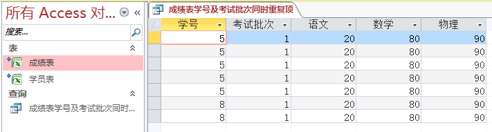

Excel 与 Access
简介
记录Excel的操作教程和利用Office带的Access辅助Excel的操作。
有些功能在Excel操作比较麻烦可以借助Access更简单更快速的实现这些功能，此文档的内容是挑选过的，挑选内容为access的知识中，基本、不难、好记能满足大部分功能需求的知识。
有些功能在Excel操作比较麻烦可以借助Access更简单更快速的实现这些功能，此文档的内容是挑选过的，挑选内容为access的知识中，基本、不难、好记能满足大部分功能需求的知识。
导入表
为了举例说明，在此我们在F盘下建立一个叫"access练习"的文件夹，在此建立1个excel文件，命名为"原.xlsx"，在其中建立2个表，如下图:

为了便于练习，数据表的数据如下:
第1步:现打开Access新建一空白数据库文件，选择"空白桌面数据库"如图:
 第2步:弹出一对话框，点击右侧的那个文件夹图标，将access文件存放的路径放在F盘的"access练习"文件夹下，并取名叫"查询库.accdb"，如图:
第3步:点击"创建"，我们创建里一个空的access文件，如图:
第2步:弹出一对话框，点击右侧的那个文件夹图标，将access文件存放的路径放在F盘的"access练习"文件夹下，并取名叫"查询库.accdb"，如图:
第3步:点击"创建"，我们创建里一个空的access文件，如图:
 第4步:接着开始导入数据，点击上部的"外部数据"标签按钮，如图:
第4步:接着开始导入数据，点击上部的"外部数据"标签按钮，如图:
 第5步:点击Excel图标，弹出窗口后右侧的"选择(R)..."按钮选择"F://access练习//原.xlsx"文件，在下面选择"通过创建链接表来链接到数据源"，如图:
第5步:点击Excel图标，弹出窗口后右侧的"选择(R)..."按钮选择"F://access练习//原.xlsx"文件，在下面选择"通过创建链接表来链接到数据源"，如图:
 第6步:点击"确定"按钮，此时默认选择的是"学员表"，点击"下一步"按钮，在新的弹窗中单击选中"第一行包含列标题(I)"，再次点击"下一步"按钮，又换了一个新弹窗，此时可以设置导入的表的名称，默认是"学员表"所以不用改了直接点击"完成"按钮。
第6步:点击"确定"按钮，此时默认选择的是"学员表"，点击"下一步"按钮，在新的弹窗中单击选中"第一行包含列标题(I)"，再次点击"下一步"按钮，又换了一个新弹窗，此时可以设置导入的表的名称，默认是"学员表"所以不用改了直接点击"完成"按钮。
第7步:按照上面的第4步、第5步、第6步将"成绩表"导入。
第8步:右键单击右边的"表1"，点击"关闭"按钮，关闭表1，此时左侧的"表1"也没了(此步骤非必须，只是为了减少界面的干扰)。
至此数据导入已经完成，后续的功能说明均基于此示例表述。
图2_1
图2_2
为了便于练习，数据表的数据如下:
| 学号 | 姓名 | 性别 | 备注 |
|---|---|---|---|
| 1 | 姬旦一 | 男 | a |
| 2 | 王旦二 | 女 | b |
| 3 | 王旦三 | 男 | c |
| 4 | 王旦四 | 女 | d |
| 5 | 姬旦五 | 男 | 5 |
| 6 | 姬旦六 | 女 | f |
| 7 | 赵旦七 | 男 | g |
| 8 | 诸葛老八 | 女 | 8 |
| 9 | 姬旦九 | 男 | 9 |
| 10 | 姬旦十 | 女 | 10 |
| 学号 | 考试批次 | 语文 | 数学 | 物理 |
|---|---|---|---|---|
| 5 | 1 | 20 | 80 | 90 |
| 6 | 1 | 100 | 40 | 10 |
| 3 | 1 | 20 | 80 | 90 |
| 2 | 2 | 20 | 80 | 90 |
| 1 | 1 | 20 | 80 | 90 |
| 5 | 1 | 20 | 80 | 90 |
| 7 | 3 | 70 | 70 | 70 |
| 5 | 1 | 20 | 80 | 90 |
| 8 | 1 | 20 | 80 | 90 |
| 5 | 6 | 20 | 80 | 90 |
| 5 | 1 | 20 | 80 | 90 |
| 8 | 1 | 20 | 80 | 90 |
| 5 | 1 | 20 | 80 | 90 |
| 9 | 5 | 80 | 80 | 90 |
第1步:现打开Access新建一空白数据库文件，选择"空白桌面数据库"如图:
图2_3
图2_4
图2_5
图2_6
图2_6
第7步:按照上面的第4步、第5步、第6步将"成绩表"导入。
第8步:右键单击右边的"表1"，点击"关闭"按钮，关闭表1，此时左侧的"表1"也没了(此步骤非必须，只是为了减少界面的干扰)。
至此数据导入已经完成，后续的功能说明均基于此示例表述。
查重
查重，其实有许多不同的查重的情况，在此只说明一种access内置的查重功能。
指定某几个字段(字段，例如"学号"这列，更近一步讲，前面的"导入表"小结中的学生表里的第一行即第一条记录，该条记录里的1便是该条记录的"学号"字段的值)。
例如查询"成绩表"里谁的"考试批次"重复了，即"学号"与"考试批次"这两个字段的值同时重复了，现举例说明:
第1步:点击上部的"创建"标签按钮，如图:
第2步:在弹出的窗口中选择"查找重复项查询向导"，点击"确定"按钮，如图:
第3步:在此可以选择要查重的表，我们要对"成绩表"查重，因为默认选的就是该表所以直接选择"下一步"按钮，如图:
 第4步:在此选择对那些字段的值进行查重，我们要找出"学号"与"考试批次"的值同时重复的记录，我们将这两个字段放到右侧，然后点击"下一步"按钮，如图:
第5步:此时可以选择除了查重的字段之外还要显示的字段，我们可以都选上，然后选择"下一步"按钮，如图:
第4步:在此选择对那些字段的值进行查重，我们要找出"学号"与"考试批次"的值同时重复的记录，我们将这两个字段放到右侧，然后点击"下一步"按钮，如图:
第5步:此时可以选择除了查重的字段之外还要显示的字段，我们可以都选上，然后选择"下一步"按钮，如图:
 第6步:此时可以指定查询结果的名称，我们修改该名称为"成绩表学号及考试批次同时重复项"然后选择"完成"按钮，如图:
此时显示查重结果，如图:
第6步:此时可以指定查询结果的名称，我们修改该名称为"成绩表学号及考试批次同时重复项"然后选择"完成"按钮，如图:
此时显示查重结果，如图:
上面的第3步图3_3中有一个标有视图的框，有3个选项：表、查询、两者，表就是原本的数据表本例中为"学员表"和"成绩表"，我们本例中创建的就是一个查询也叫视图，当我们再创建新的视图时可以将该视图作为数据源进行查询操作。
例如本例中如果修改了"成绩表"中的数据，当我们再次打开查看查询结果时，结果会自动更改，不用重复上述操作，但操作时有些步骤要注意现再说明一下：
第7步:右键点击刚才打开的视图，点击弹出菜单中的"关闭"按钮，关闭此视图的显示，这点要注意，若不先关闭的话直接在原数据表中修改数据该视图的内容不会变化，需要先关闭一下在重新打开才能刷新结果，如图:
 第8步:我们打开导入数据的那个excel文件修改"成绩表"在，添加一行数据，例如添加学号为7，考试批次为3，各科成绩都是20的一行，然后存盘，如图:
第9步:双击左侧的"成绩表学号及考试批次同时重复项"视图，右侧便打开该视图并显示新的查询结果，如图:
我们看到多出来两行，我用红线标了一下，如图:
为了便于后面的说明，将该视图关闭再将刚才添加的数据从excel文件中删除。
第8步:我们打开导入数据的那个excel文件修改"成绩表"在，添加一行数据，例如添加学号为7，考试批次为3，各科成绩都是20的一行，然后存盘，如图:
第9步:双击左侧的"成绩表学号及考试批次同时重复项"视图，右侧便打开该视图并显示新的查询结果，如图:
我们看到多出来两行，我用红线标了一下，如图:
为了便于后面的说明，将该视图关闭再将刚才添加的数据从excel文件中删除。
指定某几个字段(字段，例如"学号"这列，更近一步讲，前面的"导入表"小结中的学生表里的第一行即第一条记录，该条记录里的1便是该条记录的"学号"字段的值)。
例如查询"成绩表"里谁的"考试批次"重复了，即"学号"与"考试批次"这两个字段的值同时重复了，现举例说明:
第1步:点击上部的"创建"标签按钮，如图:
图3_1
图3_2
图3_3
图3_4
图3_5
图3_6

该查询结果在access中称为查询，查询也叫视图，视图不是表，视图是对表或视图在指定条件下的查询结果。
图3_7
上面的第3步图3_3中有一个标有视图的框，有3个选项：表、查询、两者，表就是原本的数据表本例中为"学员表"和"成绩表"，我们本例中创建的就是一个查询也叫视图，当我们再创建新的视图时可以将该视图作为数据源进行查询操作。
例如本例中如果修改了"成绩表"中的数据，当我们再次打开查看查询结果时，结果会自动更改，不用重复上述操作，但操作时有些步骤要注意现再说明一下：
第7步:右键点击刚才打开的视图，点击弹出菜单中的"关闭"按钮，关闭此视图的显示，这点要注意，若不先关闭的话直接在原数据表中修改数据该视图的内容不会变化，需要先关闭一下在重新打开才能刷新结果，如图:
图3_8
图3_9
图3_9
图3_9
差集
该表中的数据在另一个表中不存在
例如查询"学员表"中谁没有考试成绩，即在"学员表"的学号在"成绩表"没有该"学号"的记录，现举例说明:
第1步:点击上部的"创建"标签按钮，如图:
第2步:在弹出的窗口中选择"查找不匹配项查询向导"，点击"确定"按钮，如图:
 第3步:选择"学员表"，点击"下一步"按钮，如图:
第4步:选择"成绩表"，点击"下一步"按钮，如图:
第5步:点击中间的按钮是两个表的"学号"字段作为比较条件字段，点击"下一步"按钮，如图:
第3步:选择"学员表"，点击"下一步"按钮，如图:
第4步:选择"成绩表"，点击"下一步"按钮，如图:
第5步:点击中间的按钮是两个表的"学号"字段作为比较条件字段，点击"下一步"按钮，如图:
 第6步:此时可以选择除了比较条件字段之外还要显示的字段，我们可以都选上，然后选择"下一步"按钮，如图:
第6步:此时可以选择除了比较条件字段之外还要显示的字段，我们可以都选上，然后选择"下一步"按钮，如图:
 第7步:此时可以指定查询结果的名称，我们修改该名称为"没有考试成绩的学员"然后选择"完成"按钮，如图:
第7步:此时可以指定查询结果的名称，我们修改该名称为"没有考试成绩的学员"然后选择"完成"按钮，如图:
 结果如图:
结果如图:

例如查询"学员表"中谁没有考试成绩，即在"学员表"的学号在"成绩表"没有该"学号"的记录，现举例说明:
第1步:点击上部的"创建"标签按钮，如图:
图4_1
图4_2
图4_3
图4_4
图4_5
图4_6
图4_7
图4_8
表关联
将多个表符合条件的记录关联显示
举例:将"学员表"中的'姓名'、'性别'、'备注'信息显示到"成绩表"中对应的记录上, 通过'学号'来关联, 数据表参考左侧目录中的""中导入的数据, 效果如下图5_1:
 首先选择上部工具栏中的"创建"->"查询设计", 如下图5_2:
点击后效果如下图5_3:
首先选择上部工具栏中的"创建"->"查询设计", 如下图5_2:
点击后效果如下图5_3:
 若没有名为"显示表"的弹窗, 如下图5_4:
若没有名为"显示表"的弹窗, 如下图5_4:
 则选择上部工具栏中的"设计"->"显示表"来打开"显示表"窗口, 如下图5_5:
则选择上部工具栏中的"设计"->"显示表"来打开"显示表"窗口, 如下图5_5:
 点击"学员表"点击"添加"按钮, 再"成绩表"点击"添加"按钮, 将两个表添加进来, 如下图5_6:
点击"学员表"点击"添加"按钮, 再"成绩表"点击"添加"按钮, 将两个表添加进来, 如下图5_6:
 点击"关闭"按钮关闭"显示表"窗口, 在任意一个表中的'学号'字段上用鼠标左键按下不松开, 然后将鼠标移动到另一个表中的'学号'字段上, 效果如下图5_7:
这样两个表会匹配'学号'字段的值一样的记录, 关联条件设置好后来设置如何显示, 在下面的表格中设置如何显示, 可以一个一个字段设置, 我们省点事, 直接选择带*号的,
'学员表.*'表示"学员表"中的所有字段, '成绩表.*'表示"学员表"中的所有字段, 效果如下图5_8:
点击"关闭"按钮关闭"显示表"窗口, 在任意一个表中的'学号'字段上用鼠标左键按下不松开, 然后将鼠标移动到另一个表中的'学号'字段上, 效果如下图5_7:
这样两个表会匹配'学号'字段的值一样的记录, 关联条件设置好后来设置如何显示, 在下面的表格中设置如何显示, 可以一个一个字段设置, 我们省点事, 直接选择带*号的,
'学员表.*'表示"学员表"中的所有字段, '成绩表.*'表示"学员表"中的所有字段, 效果如下图5_8:
 选择上部工具栏中的"设计"->"运行", 来查看查询结果, 如下图5_9:
此事显示查询结果, 下面将查询保存, 用鼠标右键"查询1", 弹出菜单, 如下图5_10:
选择"保存"按钮, 然后会弹出一个弹窗用来输入查询的名称, 这里取名为"表关联查询", 效果如下图5_1:
选择上部工具栏中的"设计"->"运行", 来查看查询结果, 如下图5_9:
此事显示查询结果, 下面将查询保存, 用鼠标右键"查询1", 弹出菜单, 如下图5_10:
选择"保存"按钮, 然后会弹出一个弹窗用来输入查询的名称, 这里取名为"表关联查询", 效果如下图5_1:
举例:将"学员表"中的'姓名'、'性别'、'备注'信息显示到"成绩表"中对应的记录上, 通过'学号'来关联, 数据表参考左侧目录中的""中导入的数据, 效果如下图5_1:
图5_1
图5_2
图5_3
图5_4
图5_5
图5_6
图5_7
图5_8
图5_9
图5_10
图5_1